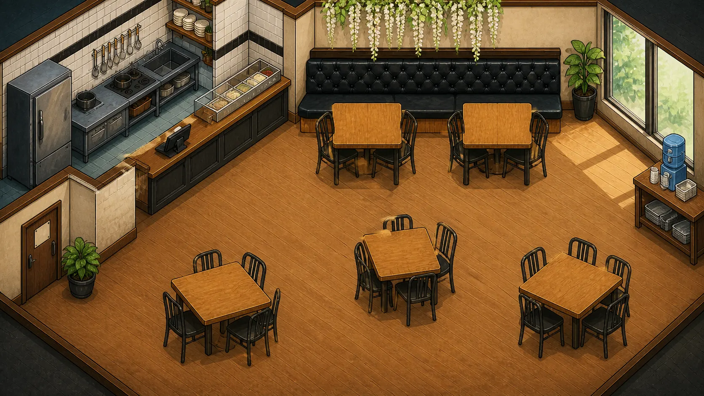

四個班
返回作品一段餐廳新人經驗
當店裡以為你會的，
遠比你真正學過的多。
四個班次裡，你會遇到客滿、消毒，以及一句句沒有下文的「先做這個」。這不是考你能不能撐住，而是讓你看見：缺少的究竟是能力，還是完整的帶訓。
改編自真實經驗；店家、人物與時間均已匿名及重新編排。

按 1、2、3 也能選。你的選擇不分對錯，只會改變你看見的事。
四個班之後
「我不是因為做不到而離開；我是在沒有完整學習機會的情況下，被要求像已經會了一樣工作。」